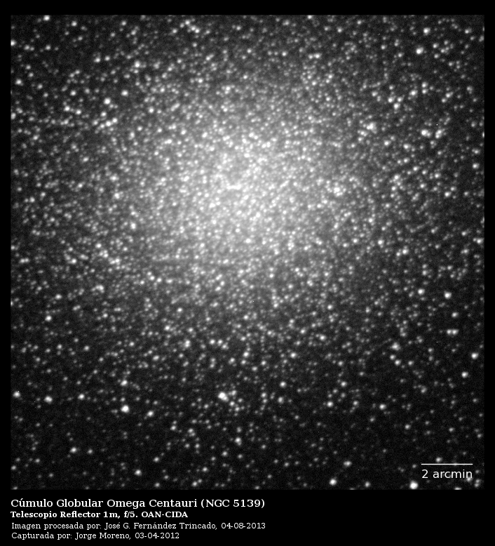

HOME-
ABOUT ME-
PUBLICATIONS-
REPOSITORIES-
PHOTOS
|  |
Explanation: The well know naked-eye globular cluster Omega Centauri may be part of the residues of a dwarf galaxy destroyed by tidal forces of Milky Way. We recently conducted a survey of RR Lyrae stars around Omega Centauri with the 1.0m Reflector Telescope and 1.0m/1.5m Jurgen Stock Telescope (a Schmidt telescope) and
the QUEST mosaic camera, which may constitute evidence for the remains of the progenitor galaxy of Omega Centauri.
hola mundo